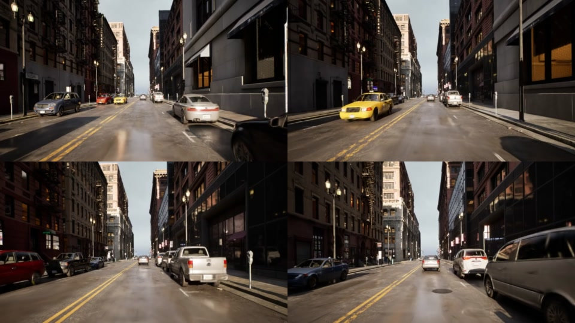

Render snapshotsStreetPBR reconstructs dynamic street scenes as relightable PBR Gaussians from unconstrained photos. This compact preview page emphasizes continuous visual results so we can inspect relighting video quality before finalizing the reviewer-facing assets.
Continuous video results
GT-component relighting preview and stable street-view rendering.
GT-component relighting sequence under a target fireplace illumination map.
Continuous PBR render sequence across a dynamic street-view trajectory.
Method overview